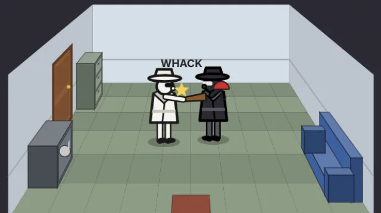
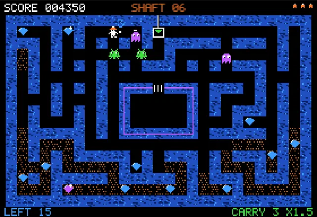
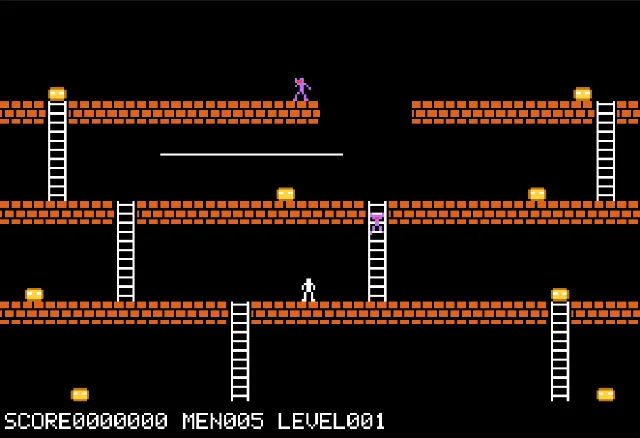
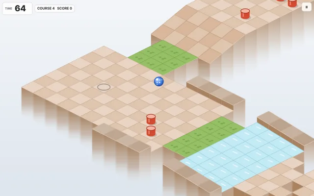
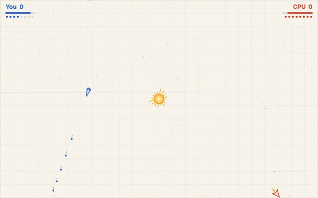
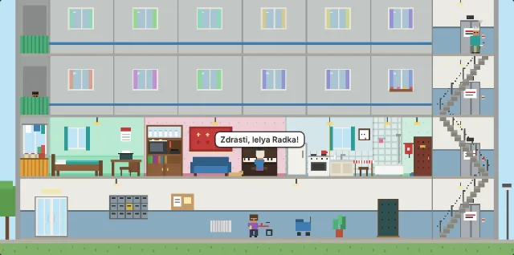
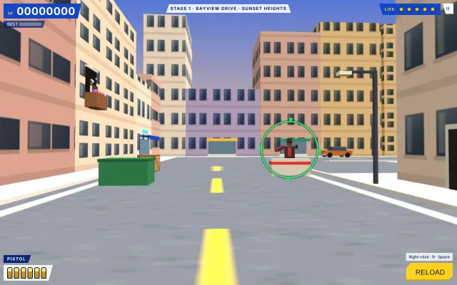

Remakes
Old games, rebuilt to run in the browser. Each one is a single page with graphics drawn in code and sound synthesised, so it works offline, on desktop and on phones. Levels and art are original.

ClockWerx
ClockWerx (Spectrum HoloByte, 1995)Swing, flip and bounce a clock hand from dot to dot until it grabs the goal, past spikes, bombs and enemy hands.

Dead Drop
Spy vs Spy (First Star, 1984)Search a freshly generated embassy for the briefcase and documents, booby-trap your rival and race for the exit.

Glint Shaft
Diamond Mine (Roklan, 1983)Dig through freshly generated shafts on a green screen, tow diamonds through the drive-through box and up the lift before the monsters eat them.

Gold Raid
Lode Runner (Broderbund, 1983)Dig traps, dodge the guards and grab every bar of gold, with sequel tools and terrain on top of the Apple II look.

Heatline MX
Excitebike (Nintendo, 1984)Side-on motocross: manage engine heat, land your jumps cleanly and build your own tracks.

Polar Delve
Arctic Adventure (Apogee, 1991)Dig, push blocks and dodge bears and penguins through ten frozen caverns to collect every treasure.

Ridge Roller
Marble Madness (Atari Games, 1984)Steer a glass marble down floating isometric courses before the clock runs out. Every course is generated from a seed.

Spring Rider
Elasto Mania (2000)Physics motorbike trials: lean, flip and balance to collect every apple, then build and share levels.

Sunwell Duel
Spacewar (DOS)Two ships duel around a star whose gravity pulls on everything. Juggle energy between shields, weapons and engines.

Tiny Tenant
Little Computer People (Activision, 1985)A little person and their dog live in a concrete panel block flat. Watch them, talk to them and send parcels.

Virtua Justice
Virtua Cop (Sega, 1994)A 3D rail shooter through generated streets: hit each gunman before his lock-on ring closes and spare the civilians.